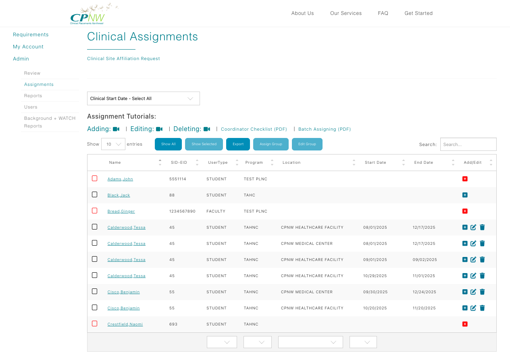

Educational Coordinator Guide
Assign Students to Clinical Sites
Use the Assignments table to place individual students or entire cohorts at the correct facility for the right rotation block.

Assign an individual student
- Use the search bar above the Assignments table to locate the student. If needed, use the paginator below the table to move between pages.
- Click the + icon to create a new assignment. Never edit a previous row to repurpose it.
- In the Location column, choose the clinical site where the student will be placed and confirm unit/department details if prompted.
- Enter the rotation Start Date and End Date so onsite teams know the exact window.
- Click the floppy disk icon to save. The row immediately reflects the new assignment and can be edited if corrections are needed.
Assign a group of students
- Use the page selector beneath the table or the search bar above it to locate the students you want to place.
- Check the box beside each student’s name. Once at least two are selected, the Assign Group button activates.
- Click Assign Group to open the modal, choose the healthcare facility, and set the shared start/end dates.
- After completing the fields, click Assign Group inside the modal to save the assignments.
- Need to update a block later? Select the same students and choose Edit Group to reopen the modal and change the facility or dates.